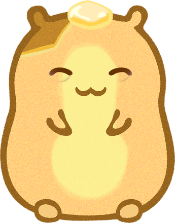
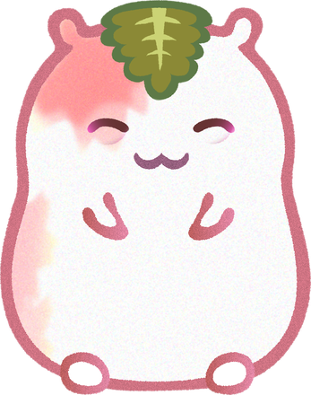
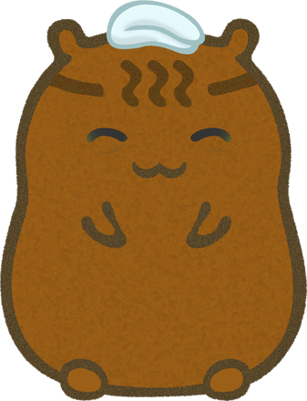

HAMCUP MUSIC VIDEO
今日も、
よく帰ってきたね
― おやすみのお茶 ―
疲れて話す元気もない夜に、じゃが・さくら・まんじゅうが静かに寄り添う30秒。

じゃが仲間思い
さくら自然と絵が好き
まんじゅう穏やかで気配り上手
0:00 / 0:30
音が出ます。スペースキーで再生・一時停止できます。
LYRICSサビの歌詞
あたたかい夜を、あなたに。
うまく話せなくても いいよ
ため息ひとつ 置いていこう
今日も よく帰ってきたね
あたたかい夜を あなたに
STORYBOARD映像構成
言葉のかわりに、小さな気づかい。
- 0–7sまんじゅうが小さなカップにお茶を注ぐ。湯気の向こうに、空いた席がひとつ。
- 7–15sじゃがが自分より大きなクッションを一生懸命押して、その席にちょこんと整える。
- 15–23sさくらが窓辺の花を一輪と、眠る3匹の絵をカップのそばへ。まんじゅうがお茶をあなたの席へ近づける。
- 23–30sあなたの席から3匹を眺める。じゃがのあくびが、さくらにうつる。まんじゅうが灯りを落とし、湯気と月明かりだけが残る。
音楽は穏やかなローファイ・ポップ（BPM 80）。丸いピアノ、静かなギター、控えめなリズムをWeb Audio APIでその場で演奏します。サビのメロディはハミングのガイドで、歌声は収録した音声に差し替える想定です。